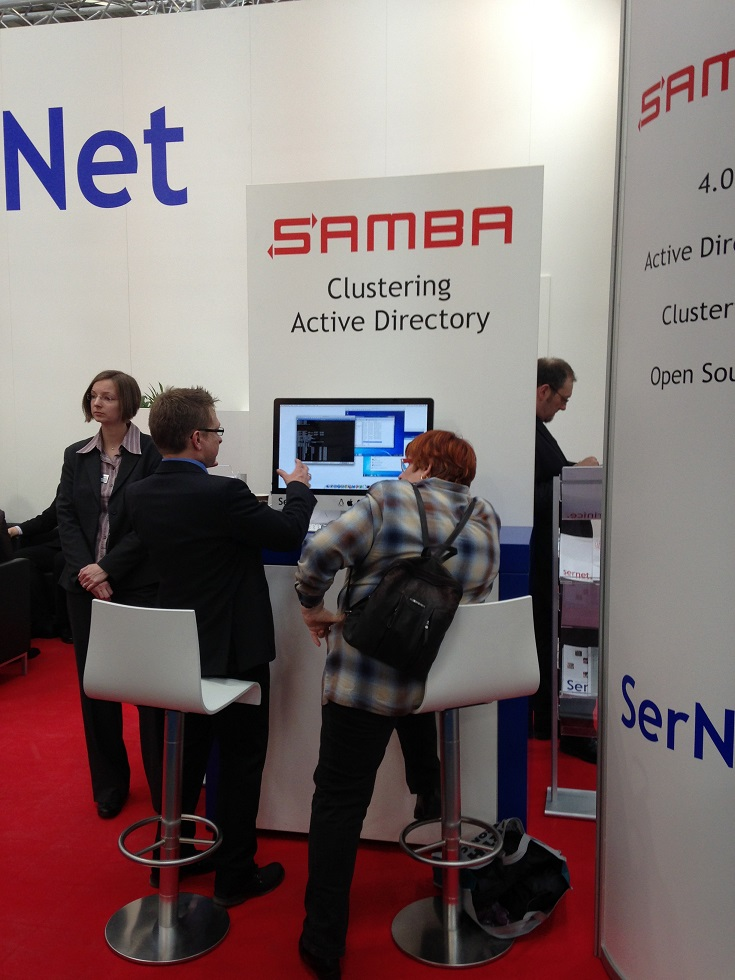
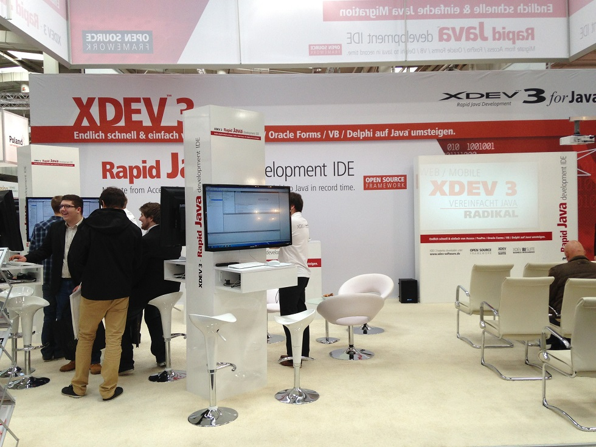

Буквально вчера побывал на выставке CeBIT 2013 проходящей в данный момент в Ганновере, Германия. Что такое CeBIT? CeBIT (от нем. Centrum der Buro- und Informationstechnik — центр офисных и информационных технологий) — крупнейшая в мире международная выставка, посвящённая информационным и телекоммуникационным технологиям[wikipedia].

Сайт выставки - http://www.cebit.de/home. Дальше будут фотографии и небольшие комментарии к увиденному. Заранее хотелось бы сказать, что даже потратив одинь день на то чтобы ПРОСТО пройтись от одного конца выставки до другого, задерживаясь максимум на 5 минут у «особо» интересных стендов (если верить википедии то общая выставочная площать - 450,000 m², там на територии даже есть свой собственны отдельный общественный транспорт =) ) не удалось посетить все павильоны [ОСТОРОЖНО, много фото].
3D принтеры от ребят из Ultimaker.
Немецкие школьники которые интересуются «инженерным» ремеслом при помощи компаний строят вот-такие вот прототипы автоматизированных линий производства :
Российская разработка — интерактивный интерфейс в буквальном смысле «на пару» (OpenCV + камера + зеркало + инфракрасные лазеры + чудо-аппарат который производит пар), можно прикольно поиграть в FruitNinja =).
Армия тоже представила свои разработки (в основном чтобы привлечь внимания призывников — в Германии с недавнего времени армия не является «обязательной»). Так же есть экспонаты которые представляют польское вооружение.
Какая-то не понятная, но от этого не менее интересная, акустическая вещица.
Нечто похожее на оригами.
Правительство разрабатывает специальную платформу, которая бы позволяла собрать в одном месте все разботанные приложения которые так или иначе облегчающие жизнь простым жителям.Ну например приложения для планирования поездок, использование электронными услугами города и страны в целом, заказ пицы и т.д.
Уголок open-source (и это только маленькая его часть).
 
Водонепроницаемый сенсорный экран из Польши.
Виртуальная реальность при помощи «точек глубины» и без Kinect-a (ASUS Xtion + QT + OpenCV).
Создание реальной 3D модели при помощи 5 камер, специального софта и очень точно откалиброванного оборудования (ребята ищут resseller-ов их продукции =) ).
Уголок IBM:
Площадь выставки непокрытая «крышей» сама по себе тоже очень интересна.
И это только маленькая частичка всего, что мне довелось увидеть и услышать. Каждая компания пыталась чем-то веделится на фоне остальных — кто-то выделялся за счет выкупа половины павильона (Microsoft,SAP и другие гиганты), кто-то строил целые крепости внутри павильона (Kaspersky Lab), кто-то делаел просто сногсшибательные композиции с точки зрения дизайна и продуманности различных мелочей (IBM), а кто-то просто был на выставке «без особых ноухау в маркетинге», но все равно при этом не имел отбоя от посетителей — китайские производители всевозможной электроники.
Если подвести некий итог, то было очень круто все просмотреть, но очень мало времени, чтобы все хорошенько рассмотреть.
Большое спасибо за внимание!